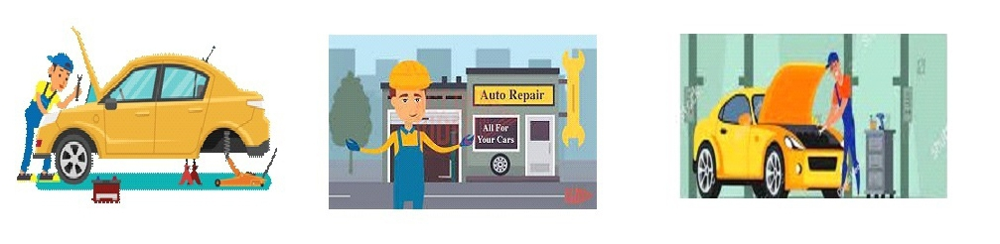

ONLINE MECHANIC SERVICING AT SOHRA

The Shillong-Sohra road is one of the most important route as it enroutes to many tourists destination.
People from different parts of India as well as foreigners use this road to visit various tourist spots and also to their workplace as for the
locals concerned.Posssibility of car breakdown on this road is inevitable and since there are less car workshops or autoshops on this road, it
will create a lot of problem if a car breaks down especially if it is along the way where no people resides.
In order to overcome this problem and to ease the journey of the travellers our team has created this online service.